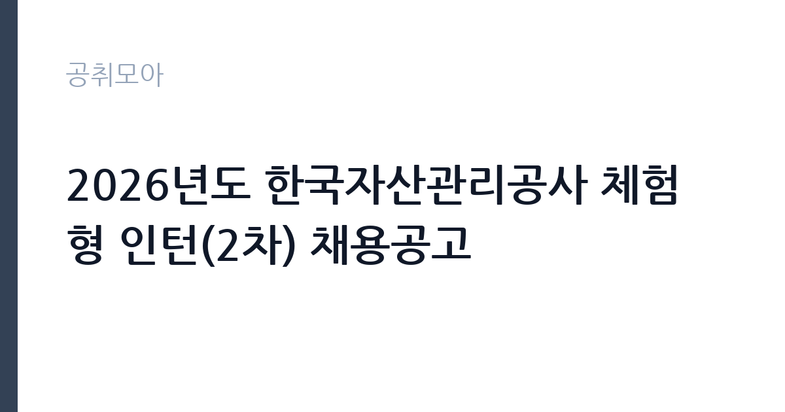

[공공기관] 2026년도 한국자산관리공사 체험형 인턴(2차) 채용공고
한국자산관리공사 · 서울 · 마감 2026-10-16 (D-13) · 출처 잡알리오

한눈에 보는 모집 조건
| 기관 | 한국자산관리공사 |
|---|---|
| 공고명 | 2026년도 한국자산관리공사 체험형 인턴(2차) 채용공고 |
| 고용형태 | 청년인턴(체험형) |
| 근무지 | 서울 |
| 게시일 | 2026-10-02 |
| 마감일 | 2026-10-16 (D-13) |
지원자격, 이렇게 읽으세요
- 공공기관 채용공시
- 세부 조건은 원문 공고문 확인
공통 자격은 국가공무원법상 결격사유 없음, 학력·전공·어학 제한 없음, 연령 만 15세 이상 34세 이하, 채용 확정 후 즉시 근무 가능, 그리고 공사 체험형 인턴 근무 경험이 없을 것입니다. 마지막 조건이 함정으로, 과거에 캠코 체험형 인턴을 한 번이라도 했다면 지원할 수 없습니다. 일반 트랙은 한국사능력검정시험 2급 이상이 필수이며, 접수 마감일까지 점수가 발표된 시험만 인정됩니다. 자립준비청년 트랙은 아동복지법상 가정위탁 종료나 시설 퇴소 사유를 증빙해야 합니다. 제대군인은 복무기간만큼 연령 상한이 연장됩니다.
이 공고의 포인트
한국자산관리공사는 부실채권 정리와 국유재산 관리, 서민금융 지원을 맡는 금융 공기업으로 부산 문현금융단지에 본사를 두고 있습니다. 체험형 인턴은 실제 부서에 배치되어 채권관리와 재산실태조사, 서민금융 상담 보조 같은 실무를 경험합니다. 정규직 전환 연계는 없지만, 공기업 인턴 경력과 내부 업무 이해는 이후 캠코 신입 공채나 다른 금융공기업 지원 때 자기소개서와 면접의 핵심 소재가 됩니다. 전국 지역본부 배치라 연고지 근무를 노려볼 수도 있습니다.
전형은 어떻게 진행되나
통상 서류전형 후 면접전형으로 진행됩니다. 서류에서는 지원동기와 역량기술서의 완성도, 자격요건 충족 여부를 보고, 면접에서는 공사에 대한 이해와 조직 적응력, 의사소통 능력을 평가합니다. 블라인드 채용이 원칙이라 출신학교나 가족관계 같은 편견 요소는 적지 마시기 바랍니다. 정확한 전형과 일정은 알리오 공시 원문과 공사 채용 홈페이지에서 확인하시기 바랍니다.
원문에서 확인한 전형 방식
(공통) ㅇ 「국가공무원법」제33조(결격사유) 및 공사 「인사규정」제15조(채용의 제한)에 의한 채용 결격사유가 없는 자 ㅇ 학력, 전공, 어학 등 제한 없음(단, 연령의 경우 「청년고용촉진특별법」 제2조제1호 의거, 입사지원서 접수마감일 기준 만15세(’11.10.16. 이전 출생) 이상 만 34세(’91.10.17. 이후 출생) 이하*) * 「제대군인지원에 관한 법률 시행령」 제19조에 의거, 군 전역자 복무기간 감안하여 응시 연령 상한 연장 ㅇ 채용 확정 후 즉시 근무가능한 자 ㅇ 한국자산관리공사 체험형 인턴 근무 경험이 없는 자 (체험형 인턴(일반)) ㅇ 한국사능력검정시험*(국사편찬위원회) 2급 이상 * 별도 유효기간은 없으며 입사지원서 접수 마감일까지 점수(등급)가 발표된 시험으로 한정 (체험형 인턴(자립준비청년)) ㅇ「아동복지법」에 따라 가정위탁 보호조치가 종료되거나 아동 복지시설에서 퇴소한 자
이런 분께 추천해요
- 금융공기업 취업을 준비하며 실무 경험과 자소서 소재가 필요한 분
- 한국사 2급 이상 자격을 이미 갖추고 단기 인턴을 찾는 청년
- 자립준비청년으로 공기업 일 경험을 쌓고 싶은 분
지원 전 체크리스트
- 캠코 체험형 인턴 근무 경험이 없음을 확인했습니다
- 연령 요건(만 15세 이상 34세 이하)에 해당합니다
- 일반 트랙은 한능검 2급 이상 점수가 마감일까지 발표됐습니다
- 블라인드 채용 주의사항을 읽고 편견 기재를 피했습니다
모집 일정과 제출 타이밍
접수 마감일은 2026년 10월 16일입니다. 이후 서류 합격자 발표와 면접이 순차 진행되며, 근무 시작 시기는 합격자 발표 후 즉시 근무 가능을 전제로 합니다. 지원서 접수 마감 시각(통상 낮 1시 마감인 경우가 많습니다)을 원문에서 반드시 확인하고, 마감 당일 오전까지는 제출을 마치시기 바랍니다.
직무 이해하기: 공공기관
체험형 인턴은 각 부서와 지역본부에 배치되어 실무 보조를 맡습니다. 온비드 공매와 국유재산 실태조사 자료 정리, 서민금융 지원 상담 보조, 채권관리 서류 검토 같은 업무가 대표적입니다. 단순 사무보조를 넘어 공기업의 결재 라인과 문서 체계를 익히고, 현업 선배에게 업무 피드백을 받을 수 있다는 점이 일반 아르바이트와 다릅니다. 배치 부서에 따라 고객 응대나 현장 실태조사에 동행하기도 합니다.
자기소개서 작성 팁
지원동기에는 공사 사업 중 본인이 배치받고 싶은 분야를 구체적으로 지목하시기 바랍니다. 부실채권 정리나 국유재산 활용, 새출발기금 같은 키워드를 직무기술서와 연결하면 됩니다. 블라인드 채용이라 학교명과 지역, 가족사항은 쓸 수 없으니, 경험과 역량 중심으로만 작성하시기 바랍니다. 청년인턴으로서 배우고 기여할 점을 균형 있게 담는 것이 좋습니다.
면접 준비 포인트
면접에서는 공사에 대한 이해도와 기본 소양을 확인합니다. 캠코가 하는 일 세 가지, 체험형 인턴으로서의 각오, 갈등 상황에서 소통했던 경험이 단골 질문입니다. 공사 홈페이지의 인재상과 최근 보도자료 1개를 읽고 가면 답변의 깊이가 달라집니다. 자립준비청년 트랙은 지원 배경과 근무 의지를 진솔하게 전달하는 것이 중요합니다.
급여·근무조건 읽는 법
보수 조건은 알리오 공시 원문 공고문과 직무기술서에서 반드시 확인하시기 바랍니다. 체험형 인턴의 보수는 통상 월 단위 세전 금액으로 제시되며, 4대보험 가입과 주휴수당, 중식 지원 여부는 공고마다 다릅니다. 공기업 청년인턴은 최저임금 이상의 보수를 지급하는 것이 원칙이지만, 정확한 월 보수액과 지급 항목, 근무시간은 원문 수치로만 확정하시기 바랍니다. 수치 확인 없이 추측으로 기재된 금액은 믿지 마시기 바랍니다.
자주 묻는 질문
- 정규직 전환이 가능한가요?
체험형 인턴은 정규직 전환 연계가 없습니다. 다만 인턴 경험은 공사 신입 공채 지원 시 자기소개서와 면접 소재로 활용할 수 있으며, 채용우대 사항은 원문에서 확인하시기 바랍니다. - 근무지는 어디인가요?
본사와 전국 지역본부 등에 배치되며, 희망 근무지를 받는 경우가 일반적입니다. 정확한 배치 방식과 근무지는 원문 공고문에서 확인하시기 바랍니다. - 한능검 2급이 없으면 지원할 수 없나요?
일반 트랙은 2급 이상이 필수 조건이라 마감일까지 점수가 발표되어야 합니다. 자격이 없다면 자립준비청년 해당 여부나 차기 채용을 노려보시기 바랍니다.
함께 보면 좋은 공고
[공공기관] 2026년 4차 기간제(보일러운전원(야간))근로자 채용 — 마감 2026-10-17[공공기관] 간호직 6급 간호사(외상센터) 채용 공고 — 마감 2026-10-19[공공기관] 간호직 6급 간호사(간호부-수술실) 채용 공고 — 마감 2026-10-19출처: 잡알리오 공개정보를 바탕으로 공취모아가 정리한 안내글입니다. 모집 조건·일정은 변경될 수 있으니 지원 전 반드시 원문 공고문을 확인하세요. 본 글은 정보 제공용이며 합격을 보장하지 않습니다.